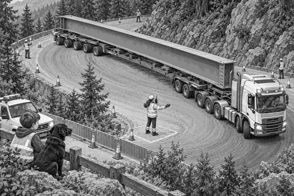

A storm had broken the footbridge at Pine Hollow.
Walkers could not cross the stream.
The repair team needed one long steel beam.
Ranger Mia would haul it up the mountain.
Her heavy truck stood at the forest yard.
Behind it was a very special trailer.
The bridge beam lay across the whole trailer.
It was longer than two buses.
Strong chains held it low and firm.
Dad drove the escort 4x4.
Tom and Scout sat safely inside.
Scout's black nose pointed at the huge load.
“How will that get around a corner?” asked Tom.
Mia pointed to the wheels at the back.
“Those wheels can turn,” she said.
“They help the long trailer follow the road.”
Trailer fact: On a normal turn, rear wheels follow a shorter path than front wheels. This is called off-tracking. Steerable trailer wheels can make that shorter path much smaller.
The road team checked every chain.
They checked every tyre.
Then they closed the mountain road.
No other vehicles could meet the long load.
The convoy began to climb.
Rumble. Grumble. Rumble.
The truck crawled through wet pine trees.
Its low gear kept the speed slow and steady.
The first bends were wide.
The long trailer followed them neatly.
Then the convoy reached Wolf Bend.
The road turned back on itself.
A rock wall stood on the inside.
A strong stone barrier guarded the outside.
There was just enough room.
But only if every wheel went to the right place.
Mia stopped before the bend.
The crew set barriers far above and below.
Dad parked behind the lower barrier.
Tom and Scout watched from the safe viewing spot.
White marks had been painted on the road.
One showed the path for the truck.
Another showed the path for the trailer.
Ranger Mia stood in a marked safe box.
She held a radio.
She could see the driver and the back wheels.
“Forward very slowly,” she said.
The truck's nose moved towards the outer edge.
The long beam began to turn.
Mia pressed a control.
The rear trailer wheels swung gently.
They pointed around the inside of the bend.
Long-load fact: Some special heavy-haul trailers have wheels that steer. A trained operator can guide the rear of the load while the truck driver steers the front.
The back of the trailer followed its own curved path.
It stayed clear of the rock wall.
It stayed clear of the stone barrier too.
At the first white mark, Mia raised her hand.
Stop!
The truck stopped.
The team checked every gap.
There was space by the rock.
There was space by the barrier.
“One metre forwards,” said Mia.
The truck crept ahead.
Hiss. Rumble. Hiss.
The beam turned a little more.
The rear wheels followed their painted curve.
At the second white mark, Mia stopped the convoy again.
Now the truck pointed up the next road.
The trailer was halfway around.
Tom held his hands like two steering wheels.
“The front and back are turning together!” he said.
Scout gave one excited woof.
“Final move,” called Mia.
The driver eased forwards.
The rear wheels straightened little by little.
The last axle rolled past the rock wall.
The whole trailer reached the upper road.
Wolf Bend was behind them.
The crew checked the chains once more.
Then the barriers opened behind the convoy.
By lunchtime, the beam reached Pine Hollow.
A crane lifted it onto the new bridge supports.
The long steel beam fitted exactly.
Tom patted Scout.
“The truck steered the front,” he said.
“And the trailer steered the back.”
Mia smiled.
The longest load had beaten the sharpest bend.
1. What was Ranger Mia carrying?
2. Why could the trailer turn at Wolf Bend?
3. What did Mia do at each white mark?